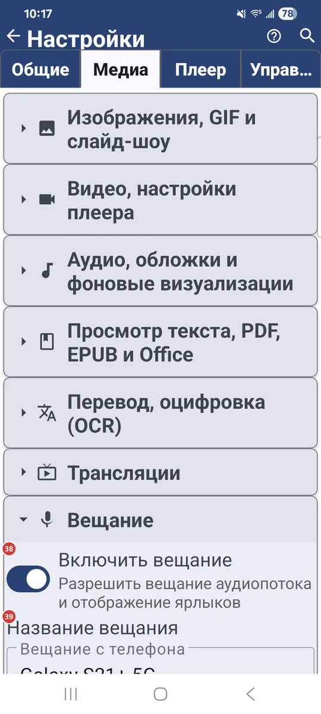
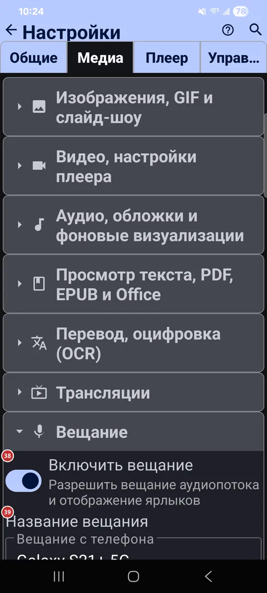

Настройки: Медиа
Для чего этот экран
На вкладке «Медиа» вы решаете, какие виды файлов обрабатывает приложение и как ведёт себя каждый вид: изображения, видео, аудио, документы, перевод, трансляции и живое вещание.


Порядок действий
Единого порядка здесь нет - каждый параметр работает сам по себе. Вкладка сворачивается в группы, по одной на каждый вид медиа, и в каждой группе перечислены её параметры. Некоторые группы, например «Трансляции» и «Вещание», есть только в тех версиях приложения, где они предусмотрены.
Элементы
Изображения, GIF и слайд-шоу
1Поддержка статичных изображенийПозволяет приложению показывать статичные изображения.
Становятся доступны JPG, PNG, WEBP, HEIC и другие форматы. Выключите, если приложение не нужно вам для картинок.
2Поддержка GIF анимацииВоспроизводит анимированные GIF в браузере файлов и плеере.
Включите, чтобы GIF двигались. На этой же странице задаются ограничения размера для изображений и анимаций.
3Загружать изображения полностьюЗагружает изображения в исходном разрешении, чтобы их можно было увеличивать.
Включает жесты масштабирования щипком и поворота в режиме панели команд, но расходует больше трафика и памяти. По умолчанию изображения загружаются с разрешением 1920 px; по сети для увеличения скачивается оригинал, и это медленнее.
4Обрезать изображения на весь экранЗаполняет весь экран, если ориентация изображения и устройства совпадает.
В полноэкранном режиме и слайд-шоу горизонтальное изображение на горизонтальном экране (или вертикальное на вертикальном) обрезается по размеру экрана. Когда параметр выключен, любое изображение целиком помещается в экран без обрезки.
5Динамический фонЗаполняет пустые поля вокруг изображения цветами его краёв.
Смягчает полосы по бокам или сверху и снизу, когда изображение не совпадает по форме с экраном. Простой фон закрашивается однородно, а сложный продолжается лучами, как продолжение картинки.
6Музыка во время слайд-шоуВключает музыку во время слайд-шоу.
Во время показа изображений и GIF играют треки из выбранного ресурса в случайном порядке. Выберите ресурс с вашей музыкой; выбор появляется, когда параметр включён.
7Назначить просмотрщиком изображений по умолчаниюНазначает FastMediaSorter приложением для открытия изображений.
Android покажет свой диалог: выберите FastMediaSorter и нажмите «Всегда». Это не навсегда: выбор хранится в настройках самого Android, и там его можно вернуть.
Видео, настройки плеера
8Поддержка видеоПозволяет приложению воспроизводить видео.
MP4, MKV, MOV, WEBM и другие форматы воспроизводятся во встроенном плеере.
9Показывать миниатюры видеофайловПоказывает кадр-превью для каждого видео в браузере файлов.
Первый кадр ролика становится его миниатюрой. Для сетевых файлов это может занять две секунды и больше: сначала файл нужно скачать и обработать.
10Открывать видеофайлы в полноэкранном режимеЗапускает видео из браузера файлов сразу на весь экран.
Видео, открытое из браузера файлов, сразу воспроизводится в полноэкранном режиме.
11Сохранять кадры видео в буфер обменаЗаодно копирует каждый извлечённый кадр в буфер обмена.
Когда вы извлекаете кадр из видео, он ещё и попадает в буфер обмена - его можно сразу вставить.
12Назначить видеоплеером по умолчаниюНазначает FastMediaSorter приложением для воспроизведения видео.
Android покажет свой диалог: выберите FastMediaSorter и нажмите «Всегда». Это не навсегда: выбор хранится в настройках самого Android, и там его можно вернуть.
Аудио, обложки и фоновые визуализации
13Поддержка аудиоПозволяет приложению воспроизводить аудио.
MP3, FLAC, AAC, OGG и другие аудиоформаты становятся доступны для воспроизведения.
14Искать обложки аудио онлайнИщет в интернете обложки для треков, в которых они не встроены.
Обложки скачиваются из интернета. Рядом появляется параметр «Искать только по Wi-Fi», чтобы мобильный трафик не тратился.
15Показывать случайные фото при воспроизведении аудиоПоказывает случайные фото, пока играет аудио.
Фото берутся из выбранного ресурса, по одному случайному на каждую песню. Используются только неподвижные изображения, видео пропускаются.
16Визуализатор при отсутствии обложкиВыбирает, что плеер показывает для трека без обложки.
Можно оставить чёрный фон или выбрать ноту с пульсирующими кольцами, дышащие столбики, волны и частицы либо видеовизуализацию.
17Назначить аудиоплеером по умолчаниюНазначает FastMediaSorter приложением для воспроизведения музыки.
Android покажет свой диалог: выберите FastMediaSorter и нажмите «Всегда». Это не навсегда: выбор хранится в настройках самого Android, и там его можно вернуть.
Просмотр текста, PDF, EPUB и Office
18Поддержка текстовых файлов (.txt, .md, .log, .json, .xml)Позволяет приложению открывать текстовые файлы.
Это файлы .txt, .md, .log, .json и .xml.
19Поддержка PDF-документовОткрывает PDF во встроенном просмотрщике.
Для PDF есть и отдельный параметр с крупными миниатюрами, он работает медленнее.
20Поддержка EPUB электронных книгЧитает электронные книги EPUB.
В читалке есть закладки и оглавление.
21Поддержка Office-документовОткрывает офисные документы в другом приложении.
DOC, DOCX, RTF и ODT открываются во внешнем приложении, а не в самом FastMediaSorter.
22Назначить приложением для документов по умолчаниюНазначает FastMediaSorter приложением для открытия документов.
Android покажет свой диалог: выберите FastMediaSorter и нажмите «Всегда». Это не навсегда: выбор хранится в настройках самого Android, и там его можно вернуть.
Перевод, оцифровка (OCR)
23Разрешить распознавание текстаВключает распознавание текста на изображениях и в PDF.
Текст извлекается, и его можно скопировать. Размер и шрифт распознанного текста задаются чуть ниже.
24Включить переводВключает перевод текста, распознанного на изображениях.
Видимый текст переводится с исходного языка на выбранный ниже. Пакеты перевода можно установить в строке загрузок.
25Исходный языкВыбирает язык текста, который нужно перевести.
Кнопка обмена между двумя полями языков меняет их местами одним нажатием.
26Перевести наВыбирает язык, на который переводить.
Переводы появляются на этом языке. Когда нужно перевести в обратную сторону, поменяйте языки местами кнопкой между ними.
27Загрузки OCR и переводаОткрывает загрузки для распознавания текста и перевода.
Установите нужные пакеты OCR и перевода, а потом удалите их, чтобы освободить место.
Трансляции
28Включить трансляцииВключает интернет-трансляции: аудио, видео и RTSP.
Трансляции дают каталог каналов и воспроизведение онлайн-радио и телевидения. Параметры ниже настраивают их работу.
29Порядок по умолчаниюВыбирает порядок списка каналов по умолчанию.
Можно упорядочить по названию, рубрике, языку, стране или по времени добавления.
30Что показывать сначалаВыбирает, какие каналы показывать по умолчанию.
Все каналы, только аудио или только видео.
31Обновление списка каналовОпределяет, когда обновляется список каналов.
Можно обновлять только по вашей просьбе, предлагать обновление при открытии трансляций или обновлять автоматически по Wi-Fi.
32Язык аудио для трансляцийВыбирает язык звука, с которого начинаются трансляции.
Доступны варианты: по умолчанию, английский, русский и украинский.
33Язык субтитров для трансляцийВыбирает язык субтитров, с которого начинаются трансляции.
Доступны варианты: по умолчанию, английский, русский и украинский.
34Сверхинтеллектуальная буферизация трансляцийДаёт трансляциям больший запас буфера на старте.
Трансляции стартуют с большим буфером и тихо переподключаются, когда соединение нестабильно.
35Воспроизводить сразуЗапускает трансляцию с другого устройства без вопроса.
Обычно трансляция, которую другое ваше устройство передаёт сюда, ждёт вашего «Принять». Когда параметр включён, она начинается сразу.
36Включить картинку в картинкеДобавляет в плеер кнопку «картинка в картинке».
Плеер также сам переходит в режим «картинка в картинке», когда вы нажимаете «Домой» (Android 12 и новее).
37Очистить отметки воспроизведенияСтирает зелёные и красные отметки воспроизведения на всех каналах.
Сами каналы остаются. Перед очисткой приложение просит подтвердить действие.
- Отмена
- Удаляются только отметки; сами каналы остаются на месте.
Вещание
38Включить вещаниеРазрешает вести живое аудиовещание с этого устройства.
Когда параметр включён, в приложении появляются ярлыки вещания. Параметры ниже задают название, порт, качество звука и работу микрофона.
39Название вещанияДаёт вещанию название.
Под этим названием идёт ваше вещание. По умолчанию - «Вещание с телефона».
40ПортЗадаёт сетевой порт для вещания.
Приложение принимает порты от 1 до 65535. Меняйте его, только если есть причина, например другое приложение уже использует текущий порт.
41БитрейтЗадаёт качество звука вещания.
Доступны 128, 192, 256 и 320 кбит/с. Чем выше значение, тем лучше звук и тем больше трафика.
42Формат аудиоЗадаёт частоту дискретизации и число каналов.
Доступны 44,1 и 48 кГц, моно или стерео.
43Усиление микрофонаЗадаёт громкость вашего микрофона в вещании.
Можно выбрать от 50% до 400%. При 100% уровень не меняется.
44Защита от петлиНе даёт возникнуть свисту, когда слушатель рядом включает вещание вслух.
Если вещание звучит вслух рядом с микрофоном, усиление микрофона уменьшается, и звук не может нарастать.
Сброс
46Сбросить раздел МедиаВозвращает к значениям по умолчанию только эту вкладку.
Настройки на других вкладках сохраняются. Перед сбросом приложение просит подтвердить действие.